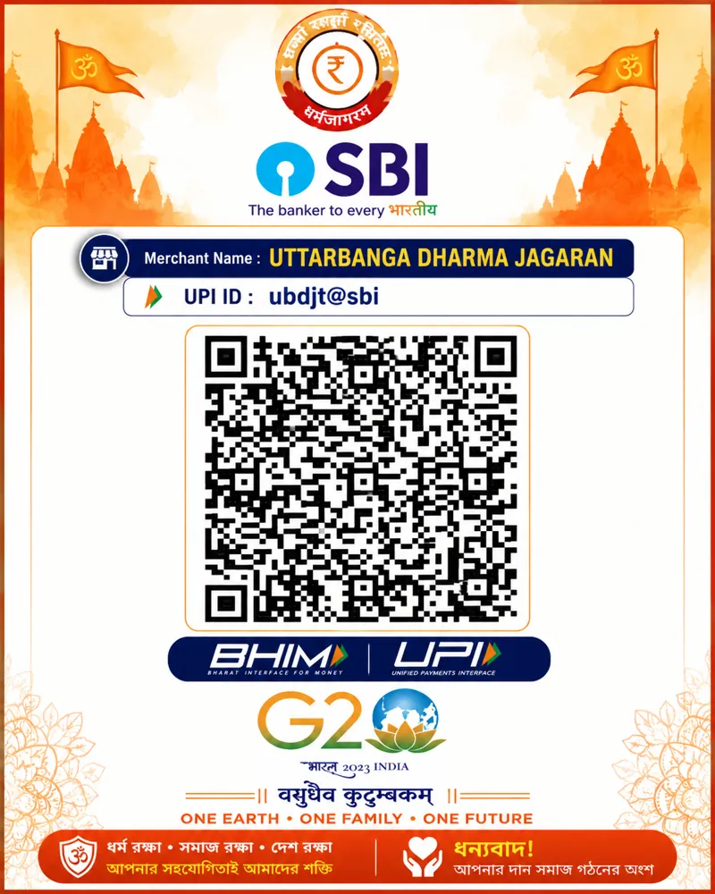

নিচের QR Code স্ক্যান করে সহজেই ডোনেশন করতে পারবেন। Google Pay / PhonePe / Paytm / BHIM UPI সব supported।
Merchant Name: UTTARBANGA DHARMA JAGARAN
UPI ID: ubdjt@sbi

⚡ QR Scan করলেই Payment হবে।
যদি App না খোলে তাহলে UPI ID copy করে manually paste করুন।
⚠️ Direct Pay button কিছু মোবাইলে কাজ নাও করতে পারে। সবচেয়ে reliable হচ্ছে QR Scan বা Copy UPI ID।